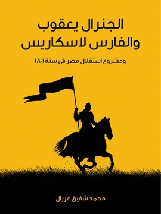

الجنرال يعقوب والفارس لاسكاريس: ومشروع استقلال مصر في سنة ١٨٠١

قراءة عربية أصلية محددة النطاق في الصفحات 9، 10 من ملف PDF المرتبط، وليست تلخيصا كاملا للكتاب. نناقش ما تدعمه هذه المقاطع فقط.
مشروع استقلال مصر ١٨٠١
يفتتح محمد شفيق غربال دراسته بالمشهد الكبير: في الأيام الأولى من يوليو ١٧٩٨ نزل بأرض مصر جيش فرنسي يقوده نابليون بونابرت، ولم تكن هذه أول إغارة للفرنسيين على مصر؛ ففي القرنين الثاني عشر والثالث عشر تلاقت صفوة فرسانهم بمماليك مصر. لكن فارس العصور الوسطى تحول في خمسة قرون إلى الرجل الغربي الذي سيعرفه مراد والألفي والبرديسي، بينما ظل مماليك مصر في ١٧٩٨ كما كانوا في ١٢٥٠ في الحرب والتفكير أو على حال أسوأ. من هذا التقابل غير المتكافئ يبني غربال خلفية قصة الجنرال يعقوب والفارس لاسكاريس ومشروعهما لاستقلال مصر، في صفحة من التاريخ المصري الحديث قلما تناولها مؤرخ بمنهجية غربال الدقيقة.
زاوية وحدود القراءة
قراءة الصفحتين ٩-١٠ (تمهيد الكتاب التاريخي)؛ النطاق خلفية الحملة الفرنسية، لا تفاصيل المشروع نفسه.
الطبعة والقراءة
هذه النسخة من الكتاب صادرة ومتاحة مجانًا من مؤسسة هنداوي بشكل قانوني؛ حيث إن نص الكتاب يقع في نطاق الملكية العامة تبعًا لقوانين الملكية الفكرية.
تنزيل PDF المجاني ↓ القراءة والمصدر الرسمي ↗